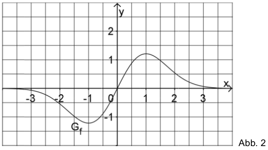

Properties of the graph of the function¶
Problem
We are given the function \(f:x\mapsto 2x\cdot e^{-0.5x^2}\) defined in \(\mathbb{R}\). Figure 2 displays the graph \(G_f\) of \(f\).
Demonstrate by calculation that \(G_f\) is point-symmetric with respect to the origin. On the basis of the function term of \(f\) make plausible that \(\lim\limits_{x\rightarrow +\infty} f(x)=0\).
Determine by calculation the position and nature of the extrema of \(G_f\).
Determine the mean rate of change \(m_S\) of \(f\) in the interval \([-0.5;0.5]\) as well as the local rate of change \(m_T\) of \(f\) at \(x=0\). Determine by how many percent \(m_S\) differs from \(m_T\).
The graph of \(f\), the \(x\)-axis and the straight line \(x=u\) with \(u \in \mathbb{R}^+\) enclose for \(0\leq x \leq u\) a region with area \(A(u)\).
Demonstrate that \(A(u)=2-2e^{-0.5u^2}\). Give \(\lim\limits_{u\rightarrow + \infty} A(u)\) and interpret the result geometrically.
The line \(h\) through the origin defined by \(y=\frac{2}{e^2}\cdot x\) together with \(G_f\) completely encloses for \(x\geq 0\) a region with area \(B\).
Determine the \(x\)-coordinates of the three intersections of the straight line \(h\) with \(G_f\) and draw the straight line into figure 2. Calculate \(B\).
In the following, the family of functions \(g_c: x\mapsto f(x) + c\) defined in \(\mathbb{R}\) with \(c\in \mathbb{R}\) will be considered.
State without any further calculation the coordinates of the maximum of the graph of \(g_c\) as well as the behavior of \(g_c\) for \(x\rightarrow + \infty\) as a function of \(c\).
The number of zeros of \(g_c\) depends on \(c\). Give for each of the following cases a possible value of \(c\) so that the respective condition holds:
\(\alpha\)) \(g_c\) has no zero.
\(\beta\)) \(g_c\) has exactly one zero.
\(\gamma\)) \(g_c\) has exactly two zeros.
Argue by means of an appropriate sketch that \(\int\limits_0^3 g_c(x)\mathrm{d}x=\int\limits_0^3f(x)\mathrm{d}x+3c\).
The number of children to which a woman gives birth during her life is described by the so-called birth rate which is statistically determined each year.
The function \(g_{1.4}: x \rightarrow 2x \cdot e^{-0.5x^2} + 1.4\) for \(x\geq0\) exemplarily describes the time evolution of the birth rate in a European country. Here, \(x\) is the number of decades passed since 1955 (i.e., \(x=1\) corresponds to the year 1965) and \(g_{1.4}(x)\) is the birth rate. For the population to be approximately constant in the long run in that contry, a birth rate of approximately \(2.1\) is required.
Sketch the graph of \(g_{1{,}4}\) in figure 2 and deduce with reasonable accuracy in which time period the birth rate is at least \(2.1\).
What is to be expected on the basis of this model for the future evolution of the population? Justify your answer.
In the time period considered, there exists a year in which the birth rate decreases most. Make use of figure 2 to give an approximate value for that year. Describe how on the basis of this model one could demonstrate by calculation that the decrease of the birth rate becomes continuously weaker from that year on.
Part 1¶
Solution of part a
In order to prove the point-symmetry of \(G_f\) we need to demonstrate \(f(x)=-f(-x)\) or, equivalently, \(f(x) + f(-x) = 0\).
This result can easily be checked by means of Sage:
Solution of part b
In order to identify the extrema of \(G_f\), one needs to determine the zeros of the derivative of \(f\).
By means of Sage, the derivative may be obtained as follows:
In order to determine the extrema, the equation
must be solved. As the exponential function does not possess zeros, all zeros result from \(1-x^2=0\). We thus find the solutions \(x_1=-1\) and \(x_2=1\).
The solutions can be confirmed with Sage.
In order to identify the nature of the extrema, one needs to consider the second derivative of \(f\) at the \(x\) values determined above. For a positive second derivative , one has a minimum, while for a negative second derivative, the extremum is a maximum. By means of the derivative of \(f\) already determined above, one obtains for the second derivative
Inserting \(x_1\) and \(x_2\) yields:
Therefore, \(x_1\) is a minimum while \(x_2\) is a maximum. This result is confirmed by figure 2.
By means of Sage, one obtains the second derivative and its values at the points \(x_1\) and \(x_2\) as follows:
Solution of part c
The mean rate of change \(m_S\) of \(f\) in the interval \([-0.5;0.5]\) is obtained as the difference of the function values at the borders of the inervall divided by the length of the interval. Emplying the point-symmetry with respect to the origin, one finds
In Sage, one can easily define a function which determines the mean slope for two intervall borders.
The local rate of change \(m_T\) at \(x=0\) is the slope in that point. The derivative has already been determined in the previous subproblem. Thus we find:
The deviation in percent thus amounts to
Solution of part d
The enclosed area \(A(u)\) can be computed as integral over \(f(x)\) from the lower limit \(0\) to the upper limit \(u\):
The area must vanish for \(u=0\).
Taking the derivative of \(A(u)\) with respect to \(u\), one finds:
These two properties prove that \(A(u)\) is the definite integral of \(f(x)\) on the interval \([0;u]\).
The integration can be carried out directly by means of Sage.
The limit of \(A(u)\) for \(u\rightarrow +\infty\) is found as:
By means of Sage the limit is obtained as follows:
The result implies that the area enclosed by the graph between \(0\) and \(+\infty\) is finite and equals 2.
Solution of part e
The first intersection of the straight line \(y=\frac{2}{e^2}\cdot x\) with \(G_f\) is found at \(x_1=0\), since both functions pass through the origin. Additional intersections are obtained by equating the two functions.
With the help of Sage, the intersections can be obtained as follows:
The intersection points can be identified graphically if both functions are drawn in the same coordinate system.
The enclosed area \(B\) results from taking the difference between the area \(A(2)\) under the function \(f\) and the triangular area below the straight line
The integral can easily be evaluated by means of Sage.
Part 2¶
Solution of part a
The family of functions \(g_c\) is displaced vertically with respect to \(f(x)\) by a constant \(c\). Therefore, the maximum of the graph remains at the same \(x\) coordinate. For \(f(x)\), the maximum was determined in problem 1b) and found at \(x=1\) and \(f(1) = \frac{2}{\sqrt{e}}\). The \(y\)-value of the maximum of \(g_c\) correspondingly is found as
Thus the coordinates of the maximum are given by \(\left(1;\frac{2}{\sqrt{e}} + c\right)\).
For a fixed value of \(c\), Sage determines the maximum numerically. Here, we choose \(c=3\).
As \(f(x)\) vanishes in the limit \(x\rightarrow + \infty\), we find \(\lim\limits_{x\rightarrow+\infty}g_c(x) = c\).
Solution of part b
For \(g_c\) not to have a zero, a positive or negative value of \(c\) must be chosen such that its absolute value is larger than the absolute value of the minimum or maximum, respectively, of the graph, e.g., \(c=2\). For exactly one zero, \(c\) can be chosen equal to the negative value of the maximum or the positive value of the minimum of \(f(x)\). From problem 1b) \(c=\pm\frac{2}{\sqrt{e}}\) follow as solutions. Furthermore, \(c=0\) can be chosen. In this case, \(f(x)\) only possesses a zero at the origin. For all other values of \(c\) (smaller than the absolute value of the maximum and minimum and different from zero), \(g_c\) possesses two zeros.
The following diagram \(c\in\{0;1;\frac{2}{\sqrt{e}};2\}\) displays graphs of functions with a different number of zeros.
The zeros can numerically be determined by means of Sage, if one provides an interval in which not more than one zero is expected. The total interval to be examined must therefore be divided into sufficiently small subintervals in order to find all zeros. In the following example, the interval \([-5, 5]\) is divided into a selectable number of subintervals. It is interesting to choose \(c\) close to the value for which only one zero exists, e.g. \(c=\pm 1.2\). Then, the number of found zeros depends on the subintervals chosen.
Solution of part c
It is straightforward to derive the given formula by exploiting the linearity of the integration:
A sketch visualizing this relation can easily be produced with Sage. The green rectangle has the size \(3c\). The yellow area corresponds to the integral over \(f(x)\).
Part 3¶
Solution of part a
In order to find the starting and end points of the interval in which \(g_{1.4}(x) > 2.1\), we must solve the following equation:
Based on the previously solved problems we know that the maximum of \(g_c(x)\) is situated at \(x = 1\). Therefore, the starting point of the interval must have a smaller value of \(x\). On the other hand, the end point must have a larger value of \(x\). We determine the limit numerically by means of Sage.
Solution of part b
As the solution to the previous subproblem indicates, the birth rate within the given model at the latest in 1975 was below the value where the population remains constant in the long run. Therefore a decrease of the population is also to be expected for the future.
Solution of part c
The point of the strongest decrease of the birth rate is given by the minimum of the derivative of the birth rate. As \(g_{c}(x)\) is only vertically shifted by a constant with respect to \(f(x)\), the derivatives of the two functions agree. The first two derivatives of \(f(x)\) have been evaluated in subproblem 1b). The minimum of the derivative of the birth rate is found by determining the zeros of \(f''(x)\):
This result can also be reproduced by means of Sage:
As the model is only valid for \(x\geq 0\), the zero at \(x_3=-\sqrt{3}\) has to be excluded. \(x_1=0\) cannot correspond to a global minimum, because according to subproblem 1c) the birth rate increases at this point. Furthermore, we know that negative values for the derivative exist. As a consequence \(x_2=\sqrt{3}\) is the minimum of the derivative which we are looking for. It corresponds to the year 1972.
For the decrease of the birth rate to become continuously weaker beyond this point in time, the derivative \(g'(x)\) for \(x>\sqrt{3}\) must be negative. According to the derivative of \(f(x)\) determined in subproblem 1b), this is indeed the case.